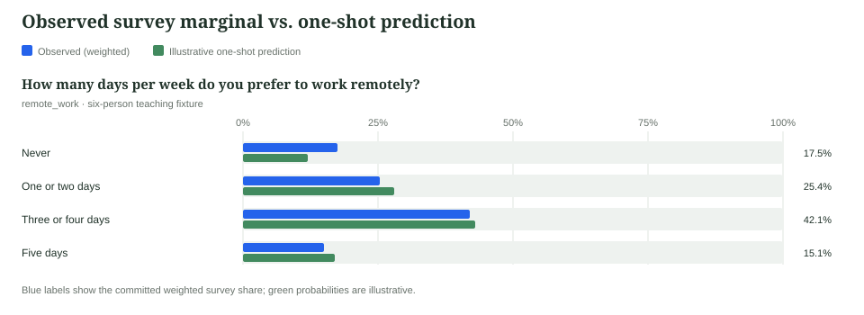

Creating and validating digital twins from survey data
Build twins from respondents’ known answers, hide a target question, predict its probability distribution, and test whether the result contains individual-level signal beyond cheap baselines.
01 What is being tested?
A survey digital twin is an LLM stand-in for one respondent. Its prompt contains approved facts about that person—other survey answers and readable covariates—but not the answer it must predict. The model returns probabilities over the held-out question’s options.
Observed truth
The respondent already answered the target. That answer is hidden from the twin and retained for scoring.
Twin prediction
A full probability vector—not only a top choice—so uncertainty and calibration can be evaluated.
Cheap comparison
A conditional model predicts the same targets from the same allowed respondent information.
Decision gate
The twin must beat the conditional baseline with uncertainty that clears zero, under a clean leakage audit.
02 Study design before model calls
Choose several held-out questions that represent the uses you care about. Decide which fields are legitimate context and explicitly exclude downstream or target-revealing variables. Predeclare models, sample, seed, comparison approaches, outputs, and success criteria.
| Run | Useful size | What it establishes |
|---|---|---|
| Smoke test | 2–5 people, 1 target, 1 model | Rendering, remote execution, parsing, and audit only |
| Debug validation | 20–50 scored people per target | End-to-end mechanics; not a strong substantive claim |
| Pilot | 100–200 people | Directional comparative evidence |
| Credible validation | Prefer 200+ or all eligible people | More stable intervals and per-question diagnosis |
03 Installation and orientation
This tutorial assumes you have cloned the zwill repository and are standing at its top level—the directory that contains README.md, pyproject.toml, and examples/. The example data is already present under examples/hiring_study/, so every path below can be copied exactly as written.
git clone https://github.com/expectedparrot/zwill.git
cd zwill
pip install -e .
zwill guide
zwill nextzwill guide is the source of truth for the complete workflow. zwill next inspects local state and returns the next command after every completed stage.
Model runs require an EXPECTED_PARROT_API_KEY in a nearby .env. The conditional baseline can use Expected Parrot embeddings, OpenAI embeddings, sentence-transformers, or the built-in lexical fallback.
04 Ingest the hiring survey
The repository includes a small hiring-preferences survey: three questions asked of job candidates, two background variables, six respondents, and 29 observed answers. It is deliberately small enough to inspect by eye. We will store it in zwill, then later pretend we do not know each person’s remote-work answer and ask a twin to predict it.
First create zwill’s local project database and an empty survey record. zwill init creates a .zwill/ directory in the current repository. The survey name is the stable handle used by all later commands.
zwill init
zwill survey create --name hiring_studyArchive raw evidence
A trustworthy analysis keeps the source material as well as the cleaned table. Here that means the human-readable questionnaire and the original panel export. raw add copies each source into managed state and records its hash, title, type, and original path. It does not parse the file or assume that every CSV column is a survey question.
zwill raw add --survey hiring_study --id questionnaire \
--input-path examples/hiring_study/raw/questionnaire.md \
--kind questionnaire --title "Hiring Study Questionnaire"
zwill raw add --survey hiring_study --id panel_export \
--input-path examples/hiring_study/raw/panel_export.csv \
--kind panel_export --title "Hiring Study Panel Export"The three kinds of normalized record
Survey data often arrives as one wide spreadsheet: one row per person and one column per question. zwill stores the same information as three connected tables. Separating them makes validation explicit and prevents, for example, an answer from silently creating a respondent or introducing an undeclared option.
| Record | What it describes | Key validation |
|---|---|---|
| Question | Stable name, wording, type, allowed options, role, and source | Options and provenance are declared before answers arrive |
| Respondent | Stable person ID, survey weight, metadata, and source | Every answer must refer to a known person |
| Answer | One person’s answer to one question, or an explicit missing code | The value must be legal for that question |
The bulk files use JSON Lines (JSONL): one complete JSON object per line, with no surrounding array. This makes large exports streamable and makes a bad row easy to locate. Here are representative lines from the three files:
{"question_name":"remote_work","question_type":"multiple_choice","question_text":"How many days per week do you prefer to work remotely?","question_options":["0","1-2","3-4","5"],"option_labels":{"0":"Never","1-2":"One or two days","3-4":"Three or four days","5":"Five days"},"role":"survey_item","source":{"raw_id":"questionnaire","note":"Questionnaire Q1."}}
{"respondent_id":"r001","weight":1.25,"metadata":{"sample_source":"panel_a","age_band":"25-34"},"source":{"raw_id":"panel_export","note":"Weight from final_weight column."}}
{"respondent_id":"r001","question":"remote_work","answer":"3-4"}The identifiers are machine-stable; labels are for people. Thus 3-4 is stored as the canonical option and “Three or four days” is its display label. This is especially important when a source uses codes such as 1, 2, and 9: expand those through the codebook rather than asking a model—or a future analyst—to guess what they mean.
Add records one at a time
The clearest way to understand the model is to add one record of each kind manually. The following commands define a question, register a person, and record that person’s answer. The source-raw fields connect cleaned records back to the archived evidence.
zwill question add --survey hiring_study \
--question-name remote_work \
--question-type multiple_choice \
--question-text "How many days per week do you prefer to work remotely?" \
--question-option 0 --option-label "0=Never" \
--question-option 1-2 --option-label "1-2=One or two days" \
--question-option 3-4 --option-label "3-4=Three or four days" \
--question-option 5 --option-label "5=Five days" \
--role survey_item --source-raw questionnaire \
--source-note "Questionnaire Q1"
zwill respondent add --survey hiring_study \
--respondent-id r001 --weight 1.25 \
--metadata "sample_source=panel_a" --metadata "age_band=25-34" \
--source-raw panel_export \
--source-note "Weight from final_weight column"
zwill answer add --survey hiring_study \
--respondent-id r001 --question remote_work --answer 3-4r001 is and how much survey weight that row carries. Only then could the answer command create the link “r001 answered 3-4 to remote_work.” A refused answer would use --missing-code refused rather than inventing “refused” as a response option.Use JSONL for the complete example
Typing 29 answer commands is useful for learning but tedious in practice. The three import commands below perform the same operation once per line for the complete fixture. Start with a fresh survey if you ran the manual commands above; do not add the same records manually and then import them again.
zwill question import --survey hiring_study \
--input-path examples/hiring_study/questions.jsonl
zwill respondent import --survey hiring_study \
--input-path examples/hiring_study/respondents.jsonl
zwill answer import --survey hiring_study \
--input-path examples/hiring_study/answers.jsonl
zwill next --survey hiring_studyImport is a validation boundary, not a best-effort conversion. An answer for an unknown respondent, an undeclared question, or an illegal option is reported rather than quietly reshaping the survey. The fixture’s answers_with_invalid.jsonl demonstrates this: respondent r006 answers every_day, which is not one of remote_work’s declared options.
05 Inspect, then commit observed truth
zwill status
zwill table --survey hiring_study
zwill survey report --survey hiring_study --format html \
--path survey-profile.html
zwill commit --survey hiring_study
zwill next --survey hiring_studyInspect wording, option labels, missingness, weights, and distributions before spending on inference. commit freezes the observed truth marginals used later for scoring; it is not merely a save button.
| Field | Role in this example | Twin handling |
|---|---|---|
remote_work | Held-out survey target | Answer hidden; wording and options shown |
job_search_stage | Survey response | Available context |
pay_transparency | Survey response | Available context |
region, industry | Covariates | Available context |
age_band | Respondent metadata | Included by default |
06 Establish the one-shot marginal
Before claiming respondent-level prediction, ask the model for the aggregate distribution without constructing individual twins. This reveals how much population structure can be produced from the question alone.
zwill edsl-export --survey hiring_study --target probability-job \
--questions remote_work --model openai:gpt-5.5 \
--path one_shot.edsl.json
zwill edsl-run --job one_shot.edsl.json \
--path one_shot_results.json.gz
zwill prob-results import --survey hiring_study \
--input-path one_shot_results.json.gz
zwill prob-results report --survey hiring_study \
--job-id <probability_job_id> --format svg \
--path one-shot-marginals.svgSave the probability_job_id returned by import. You will use it when building the final report.

The comparison makes two different questions visible. The blue distribution is what these respondents actually said after survey weights were applied. The green distribution is what the model expected from the question and options alone. Close agreement means the model has useful aggregate prior knowledge; it does not yet show that a respondent-specific twin can distinguish one person from another.
07 Predict held-out answers
For a tutorial smoke test, export six twin scenarios—one per respondent—with remote_work held out. The explicit --allow-unapproved marks this as an ad hoc debug run.
zwill edsl-export --survey hiring_study \
--target twin-probability-job \
--heldout-questions remote_work \
--model openai:gpt-5.5 \
--sample-respondents 6 --seed 20260721 \
--allow-unapproved --path twin.edsl.jsontwin-experiment plan instead of --allow-unapproved.zwill edsl-run --job twin.edsl.json \
--path twin_results.json.gz
zwill twin-results import --survey hiring_study \
--input-path twin_results.json.gzSave the returned twin_job_id. If malformed provider responses are reported, use twin-results retry-malformed and merge the retry rather than silently dropping cases.
08 Audit prompts and validate
Audit at least one imported run before trusting its scores. The run report exposes construction metadata, prompt templates, rendered scenarios, raw responses, malformed rows, and import issues.
zwill twin-results run-report --survey hiring_study \
--job-id <twin_job_id> --format html --path twin-audit.html
zwill twin-validate --survey hiring_study \
--jobs <twin_job_id> --out validation_bundle \
--require-baseline
zwill next --survey hiring_studyThe validation bundle contains report.html, bootstrap.json, leakage_audit.json, and manifest.json. The conditional baseline is fit on the same respondents the twins scored.
09 Read the evidence
Run zwill guide show interpreting-results before writing conclusions. Lower NLL and Brier scores are better. Accuracy is useful as a sanity check, but the headline is the paired difference against the conditional baseline.
Also inspect probability assigned to the actual answer, marginal fit, per-question failures, malformed-row rate, and cross-question attenuation. The empirical marginal is an oracle benchmark because the target has already been observed; it is not deployable for a genuinely new target.
10 Build and publish the report
zwill report build --survey hiring_study --path report_out \
--job-id <twin_job_id> \
--probability-job-id <probability_job_id>
zwill report generate-interpretations --survey hiring_study \
--path report_out --job-id <twin_job_id> \
--probability-job-id <probability_job_id>
zwill report render --survey hiring_study --path report_out \
--job-id <twin_job_id> \
--probability-job-id <probability_job_id> --finalThe final gate requires both generated interpretations to be imported before it will render. Open report_out/index.html. The folder is self-contained and can be published as a GitHub Pages artifact while the raw jobs, results, plans, and manifests remain preserved in the project state.
11 From worked example to real study
- Replace the fixture with a documented, codebook-expanded survey and resolve all quarantine issues.
- Select 5–10 defensible held-out questions and declare leakage exclusions.
- Create and approve a
twin-experimentplan with sample, seed, models, approaches, cost, outputs, and decision criteria. - Prefer at least 200 scored respondents—or all eligible respondents when fewer exist—and flag sparse options and subgroups.
- Compare prompt or model variants through the same gate; do not choose a winner from a bare run.
# The two commands to keep using throughout the study:
zwill guide
zwill next --survey <survey_name>zwill also supports numeric targets through quantile predictions, ranking and MaxDiff batteries through a separate rank-utility flow, and open-ended targets by first coding responses into themes. The bundled guide routes each question type to its proper validation workflow.